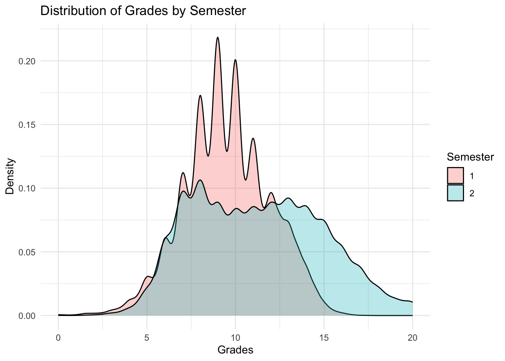
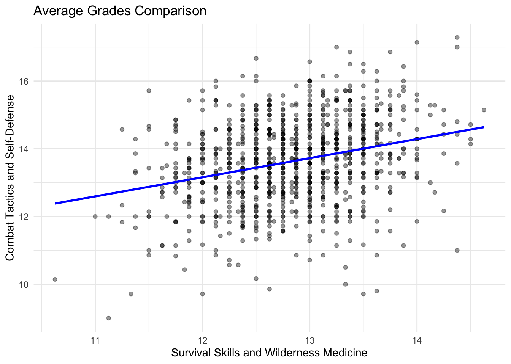
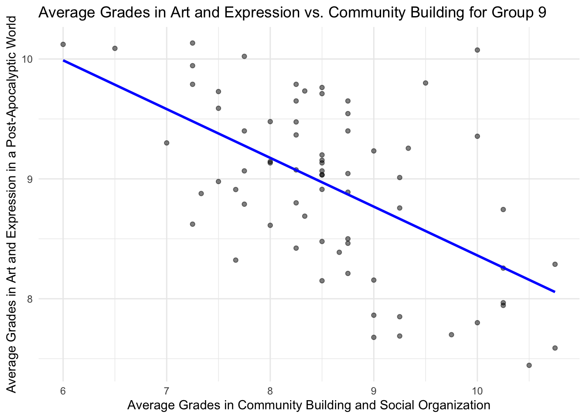

Rows: 52586 Columns: 5
── Column specification ────────────────────────────────────────────────────────
Delimiter: ","
chr (1): course
dbl (4): group, id, semester, grade
ℹ Use `spec()` to retrieve the full column specification for this data.
ℹ Specify the column types or set `show_col_types = FALSE` to quiet this message.
Simple analyses
Question 2
total_grades <- grades |>select(grade) |>summarise(total =n())print(glue("The data set contains {total_grades$total} grades."))
The data set contains 52586 grades.
Question 3
number_students <- grades |>distinct(id) |>summarise(total=n())print(glue("The number of student contained in the data set is {number_students$total}."))
The number of student contained in the data set is 985.
Question 4
students <- grades |>select(id,group) |>distinct()
## creating the graphical representation ggplot(students_per_group, aes(x=group, y=number_of_students)) +geom_bar(stat ="identity")+labs(title ="Number of students per group",x ="Group",y ="Number of students")
Question 6
## Calculate the average grades average_grades_PAHA <- grades |>filter (course =="Post-Apocalyptic History and Archaeology") |>group_by(group) |>summarise(average_grade =mean(grade, na.rm =TRUE))print (average_grades_PAHA)
## graphical representation ggplot(average_grades_PAHA, aes(x = group, y = average_grade)) +geom_col() +labs(title ="Average Grades in Post-Apocalyptic History and Archaeology by Group",x ="Group",y ="Average Grade")
Question 7
ggplot(grades, aes(x = grade, fill =factor(semester))) +geom_density(alpha =0.3) +labs(title ="Distribution of Grades by Semester",x ="Grades",y ="Density",fill ="Semester") +theme_minimal()

The repartition of grades is much larger during the second semester (6 to 15), whereas during the 1 it is much more concentrated around the same values (6 to 13).
3 Attendance analysis
Question 8
## calculate number of grades per students grades_per_student <- grades |>group_by(id, group) |>summarise(number_of_grades =n(), .groups ='drop')
## an extract grades_per_student_extract <- grades_per_student |>slice_tail(n =5) |> knitr::kable(caption ="Extract of grades per student data frame")print(grades_per_student_extract)
## creation of the markdown table summary_stats <- grades_per_student |>summarise(min =min(number_of_grades),max =max(number_of_grades),average =mean(number_of_grades),median =median(number_of_grades) )print(knitr::kable(summary_stats, format ="markdown", caption ="Summary Statistics of Grades per Student"))
Table: Summary Statistics of Grades per Student
| min| max| average| median|
|---:|---:|-------:|------:|
| 48| 55| 53.3868| 54|
Question 9
## Filtering for the specific course asked and counting the number of grades grades_art_expression <- grades |>filter(course =="Art and Expression in a Post-Apocalyptic World") |>group_by(id, group) |>summarise(number_of_grades =n(), .groups ='drop') ## Extract of this data set grades_art_expression_extract <- grades_art_expression |>slice_tail(n =5) |> knitr::kable(caption ="Extract of grades in Art and Expression in a Post-Apocalyptic World")print(grades_art_expression_extract)
Table: Extract of grades in Art and Expression in a Post-Apocalyptic World
| id| group| number_of_grades|
|---:|-----:|----------------:|
| 981| 8| 9|
| 982| 1| 9|
| 983| 6| 9|
| 984| 6| 9|
| 985| 1| 9|
Question 10
## regrouping students by same number of grades for Art and Expression in a Post-Apocalyptic World grades_distribution <- grades_art_expression |>group_by(number_of_grades) |>summarise(number_of_students =n(), .groups ='drop')print(grades_distribution)
##Graphical representation ggplot(grades_distribution, aes(x =factor(number_of_grades), y = number_of_students)) +geom_col(fill ="forestgreen") +# Use geom_col for bar plotlabs(title ="Distribution of the Number of Grades in Art and Expression",x ="Number of Grades",y ="Number of Students") +theme_minimal()
Question 11
### Calculate the number of grades per student in Art and Expressiongrades_art_expression <- grades |>filter(course =="Art and Expression in a Post-Apocalyptic World") |>group_by(id, group) |>summarise(number_of_grades =n(), .groups ='drop')### Calculate the average number of grades per groupaverage_grades_group <- grades_art_expression |>group_by(group) |>summarise(average_number_of_grades =mean(number_of_grades), .groups ='drop')### Convert group to a factor for better plottingaverage_grades_group$group <-as.factor(average_grades_group$group)### Graphical representationggplot(average_grades_group, aes(x = group, y = average_number_of_grades)) +geom_point(size =3, color ="forestgreen") +labs(title ="Average Number of Grades in Art and Expression by Group",x ="Group",y ="Average Number of Grades") +theme_minimal()
Two groups (7 and 15) seem to have more grades in average than the others in the Art and Expression in a Post-Apocalyptic World, and that might be because of their group.
4 Grade Analysis
Question 12
### Calculate average grades per student and courseaverage_grades <- grades |>group_by(id, group, course) |>summarise(average_grade_all =mean(grade, na.rm =TRUE), .groups ='drop') ### Pivot to have the good columns asked average_grades_wide <- average_grades |>pivot_wider(names_from = course, values_from = average_grade_all) ### Print extract like in the exercise extract_average_grades <- average_grades_wide |>select(id, group, `Art and Expression in a Post-Apocalyptic World`, `Combat Tactics and Self-Defense`) |>slice_head(n =5) |># Get the first 5 rows for the extract knitr::kable(caption ="Extract of Average Grades per Student and Course")print(extract_average_grades)
Table: Extract of Average Grades per Student and Course
| id| group| Art and Expression in a Post-Apocalyptic World| Combat Tactics and Self-Defense|
|--:|-----:|----------------------------------------------:|-------------------------------:|
| 1| 5| 10.112500| 15.71429|
| 2| 14| 9.444444| 14.85714|
| 3| 1| 8.444444| 12.85714|
| 4| 7| 9.488889| 16.28571|
| 5| 11| 9.988889| 14.57143|
Question 13
ggplot(average_grades_wide, aes(x =`Survival Skills and Wilderness Medicine`, y =`Combat Tactics and Self-Defense`)) +geom_point(alpha =0.4) +# Points for each student with transparencygeom_smooth(method ="lm", color ="blue", se =FALSE) +# Linear trend line without confidence intervallabs(title ="Average Grades Comparison",x ="Survival Skills and Wilderness Medicine",y ="Combat Tactics and Self-Defense" ) +theme_minimal()
`geom_smooth()` using formula = 'y ~ x'

This graphic shows that the better the grades you have in Survival Skills and Wilderness Medicine, the better grades you will have in Combat Tactics and Self-Defense.
Question 14
# Calculate the correlation by groupcorrelation_by_group <- average_grades_wide |>group_by(group) |>summarise(correlation =cor(`Art and Expression in a Post-Apocalyptic World`, `Community Building and Social Organization`, use ="complete.obs")) print(correlation_by_group)
# Identify the group with the least negative correlationlowest_correlation_group <- correlation_by_group |>filter(correlation ==min(correlation, na.rm =TRUE)) |>pull(group)print(lowest_correlation_group)
[1] 9
# Check if we have a valid groupif (length(lowest_correlation_group) >0) { filtered_grades <- average_grades_wide |>filter(group == lowest_correlation_group) # Create the graphical representation ggplot(filtered_grades, aes(x =`Community Building and Social Organization`, y =`Art and Expression in a Post-Apocalyptic World`)) +geom_point(alpha =0.5) +geom_smooth(method ="lm", se =FALSE, color ="blue") +# Add a linear trend linelabs(title =paste("Average Grades in Art and Expression vs. Community Building for Group", lowest_correlation_group), x ="Average Grades in Community Building and Social Organization", y ="Average Grades in Art and Expression in a Post-Apocalyptic World") +theme_minimal() } else { print("No valid group with correlation found.") }
`geom_smooth()` using formula = 'y ~ x'

The group with the highest negative correlation (the most far from 0) is group 9, we can see a weak correlation between the average grades in the two classes for this group.
Question 16
##Calculating the final grades by the given definitionfinal_grades <- average_grades |>group_by(id, group) |>summarise(final_grade =mean(average_grade_all, na.rm =TRUE), .groups ='drop') ##Arrange in descreasing order final_grades_sorted <- final_grades |>arrange(desc(final_grade))## Print the extract asked final_grades_extract <- final_grades_sorted |>slice_head(n =5) |> knitr::kable(caption ="Extract of Final Grades per Student")print(final_grades_extract)
# Calculate average final grade and other statistics by groupsummary_stats <- final_grades |>group_by(group) |>summarise(average_final_grade =mean(final_grade, na.rm =TRUE),min_final_grade =min(final_grade, na.rm =TRUE),max_final_grade =max(final_grade, na.rm =TRUE),median_final_grade =median(final_grade, na.rm =TRUE),.groups ='drop' )print(knitr::kable(summary_stats, caption ="Summary Statistics of Final Grades by Group"))